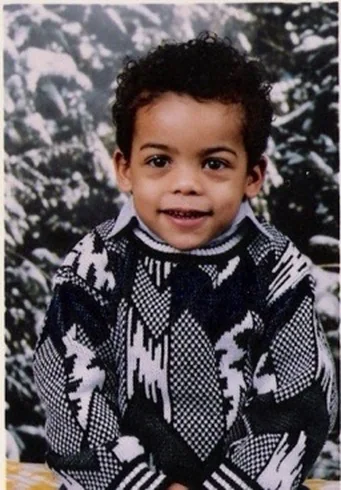

It didn't start with the law degree.
For years my job was making sure large companies never lost an idea. Global portfolios. Priority chains across a dozen countries. Office actions answered by teams who did nothing else.
Then a solo inventor would call. Same quality of idea, sometimes better. Someone had quoted them ten thousand dollars. That's most people's barrier — and it isn't the money. It's that they don't know a patent attorney at all.
I only know that because I'm on both sides of it. I'm a founder too. So I started building the tools I'd want if I were the person calling — and then I kept going, because once you can build, every problem you've been quietly carrying starts looking solvable.
My daughter builds LEGO cities with no plan and no permission. She just decides the thing should exist and starts placing bricks. Somewhere along the way I forgot you were allowed to do that. She reminded me.